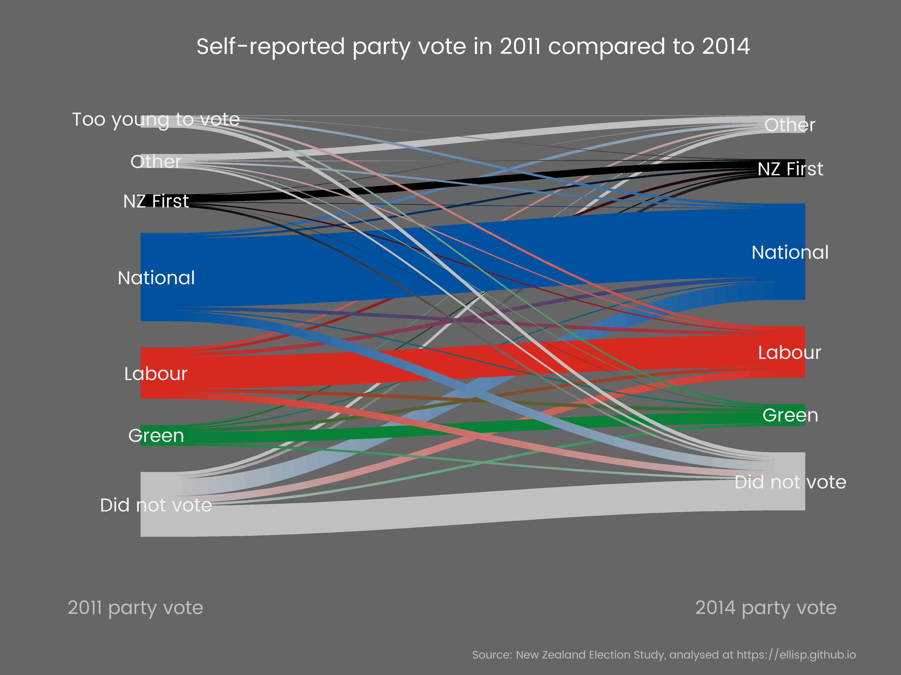
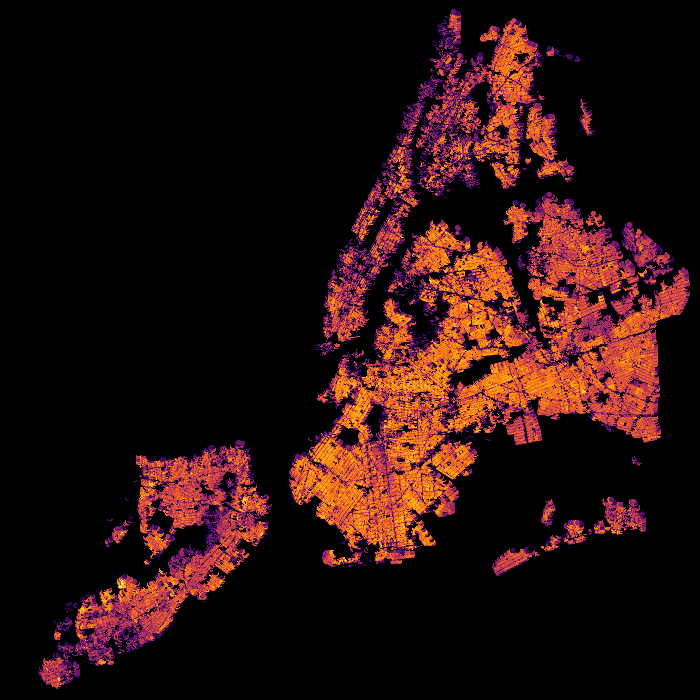

Election data in Anglo-America is generally first past the post. In other areas, governments are formed with proportional representation. Both of these are rather banal when it comes to visualization. A more interesting graphical experience comes from ranked ballot choices. In these elections, we can see voter's true preferences.
The 2018 Ontario Progressive Conservative leadership race is one of the examples where we can visualize a ranked ballot. (Other examples like France's presidential elections are not ranked and so require polling to see where voters moved to after their prefered candidate was eliminated.)
The results can be found here.
The article contains both the results by county and the aggregated results.
I propose to create two main plots. The first one will be a Sankey plot.

The second will be a Choropleth Showing polling data by riding.

Given the multidimensional nature of this, I foresee needing to use a gif or or animation to show the changes in ballots over time.
The winner of the election (Doug Ford) is part of a minor political dynasty in Canada. His brother sparked controversy by smoking crack while in the office of the mayor of Toronto. Mr Ford's politics are generally described as populist and unconventional.
I want to understand, through visualization, how the preferences of voters found common ground with Ford after candidates they prefer was eliminated.